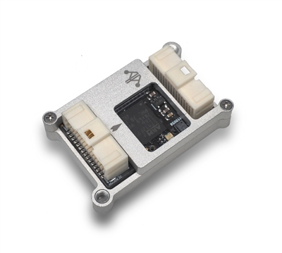

mRobotics Control Zero F7¶
Specifications¶
32-bit STM32F777 Cortex M4 core with FPU rev. 3 216 MHz/512 KB RAM/2 MB Flash
F-RAM Cypress MF25V02-G 256-Kbit nonvolatile memory (Flash memory that performs as fast as RAM)
Bosch BMI088 3-axis accelerometer/gyroscope (internally vibration dampened)
Invensense ICM-20602 3-axis accelerometer/gyroscope
Invensense ICM-20948 3-axis accelerometer/gyroscope/magnetometer
Infineon DPS310 barometer (So smooth and NO more light sensitivity)
Spektrum DSM / DSM2 / DSM-X® Satellite compatible input and binding
Futaba S.BUS® & S.BUS2® compatible input
FRSky Telemetry port output
Graupner SUMD
Yuneec ST24
PPM sum input signal
8x PWM outputs (all DShot capable)
1x RSSI (PWM or voltage) input
6x UART (serial ports total), two with HW flow control
USB console input with two endpoints, one defaults to MAVLink for GCS, one for SLCAN
1x I2C
1x SPI
1x CAN
1x JTAG (TC2030 Connector)
3x Ultra low noise LDO voltage regulators
Tricolor LED
Uncased Weight and Dimensions¶
Weight: 5.3g (.19 oz)
Width: 20mm (.79”)
Length: 32mm (1.26”)
Height: 12.07mm (.475”)
Default UART order¶
SERIAL0 = console = USB (normally for GCS connection)
SERIAL1 = Telemetry1 = USART2
SERIAL2 = Telemetry2 = USART3
SERIAL3 = GPS1 = UART4
SERIAL4 = GPS2 = UART8 (labelled as FrSky Telem, but can be used for any serial device, defaults to GPS protocol)
SERIAL5 = User = UART7 (USER/DEBUG)
SERIAL6 = OTG2 (virtual USB connection for SLCAN or passthru use)
Serial protocols can be adjusted to personal preferences.
Dshot capability¶
All motor/servo outputs are Dshot and PWM capable. However, mixing Dshot and normal PWM operation for outputs is restricted into groups, ie. enabling Dshot for an output in a group requires that ALL outputs in that group be configured and used as Dshot, rather than PWM outputs. The output groups that must be the same (PWM rate or Dshot, when configured as a normal servo/motor output) are: 1-4, 5/6, and 7/8.
More Information¶
Pinouts, wiring diagrams, setup information, etc. is shown here:
Where to Buy¶
[copywiki destination=”plane,copter,rover,blimp”]